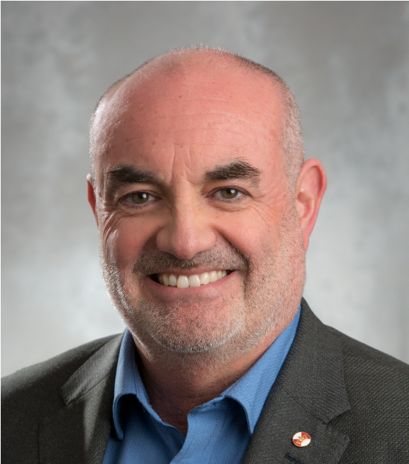

Claudio Canizares
University of Waterloo, Canada
Presentation: Keynote 1
Claudio A. Cañizares (Fellow, IEEE) has been a University Professor, the Hydro One Endowed Chair, and the Executive Director of the Waterloo Institute for Sustainable Energy, ECE Department, University of Waterloo since 1993. His highly cited research focuses on modeling, simulation, computation, stability, control, and optimization of power and energy systems in the context of decarbonization and grid-edge technologies. He has received the 2017 IEEE PES Outstanding Power Engineering Educator Award, the 2016 IEEE Canada Electric Power Medal, and multiple awards and recognitions from PES Technical Committees. He is a former EIC of IEEE Transactions on Smart Grid and the Division VII Director to the IEEE Board. He is a Fellow of the Royal Society of Canada, the Canadian Academy of Engineering, and the Chinese Society for Electrical Engineering.